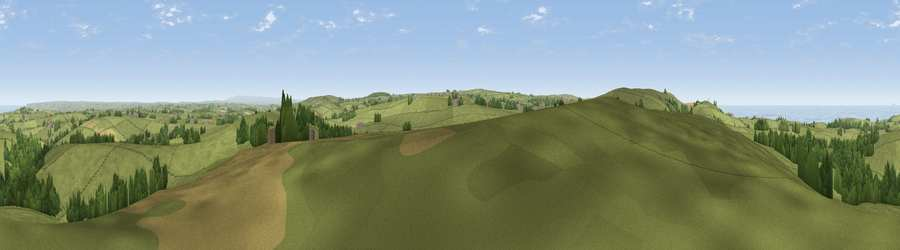

Viewpoint near Higher Crackington
#5298 in England · top 12% of its area beats it · near Higher CrackingtonThe view, rendered

A 360° render of this exact spot computed from the terrain model, tree cover and land cover — summer colours, afternoon light, calibrated against photographs of famous viewpoints. Real trees, hedges and buildings will differ in detail.
The panorama
Grey silhouette: terrain skyline in each direction (720 bearings, Earth curvature and refraction included). Dashed green: skyline with trees (+15 m) and buildings (+8 m) as obstacles. Blue strip: how far the ground is visible on each bearing.
Where the view opens
Wedge length = distance to the farthest visible ground on that bearing (vegetation-aware). Rings at 10, 25 and 50 km.
What fills the view
78% grassland · 13% woodland · 5% water · 3% cropland ·
Angular shares of the visible panorama (visual magnitude), not map area. Landscape diversity 0.33 (0–1 Shannon).
Key numbers
More beautiful places nearby
The staircase of upgrades: each row has a higher view potential than everything closer. Driving times are estimates from straight-line distance, calibrated against real road routing — check an actual route before setting out.
| Place | Direction | Drive | Score |
|---|---|---|---|
| Tresparrett Down | WSW · 2 km | ~6 min | 80.8 |
| Viewpoint near Crackington Haven | W · 3 km | ~7 min | 88.1 |
| Viewpoint near Combe Martin | NE · 70 km | ~93 min | 88.9 |
| Holdstone Hill | NE · 71 km | ~94 min | 90.2 |
| The Knoll | E · 137 km | ~161 min | 91.0 |
50.71323, -4.61013 · source: screening · position refined by local search. Computed location — check access rights before visiting.